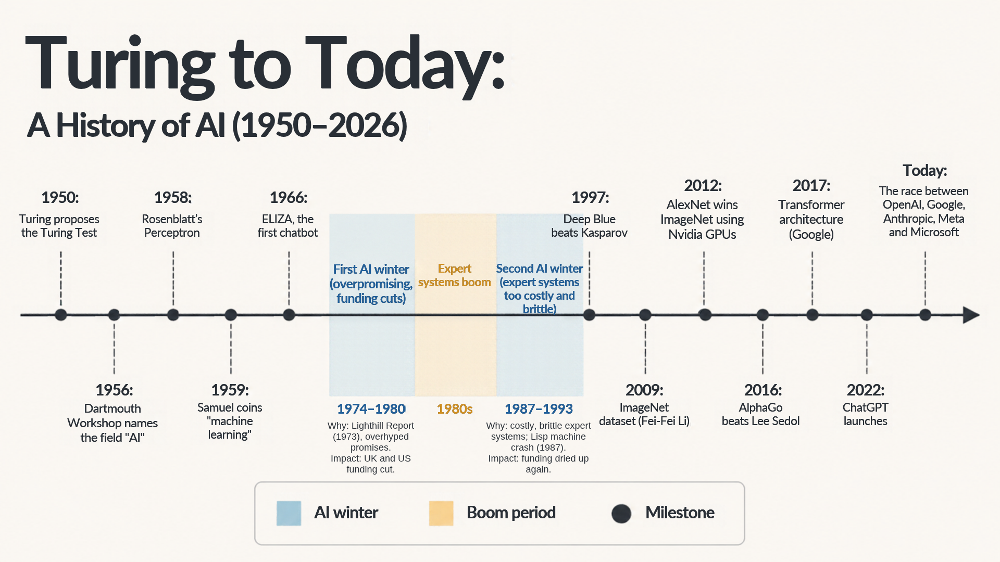

Turing to Today: A History of AI
A one-page timeline of artificial intelligence and machine learning, from Alan Turing's 1950 test to today's race between the major AI labs. The two AI winters are shaded in blue, with their causes and impacts, to show that progress in AI has come in cycles of hype and setback.